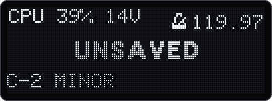

mastertune erledigt dieselbe Arbeit mit weniger Befehlen und verliert weniger Zeit zwischen den Audio-Blöcken. Der CPU-Monitor zeigt dir die Last, die Stimmen und wann der Deluge an der Qualität sparen oder Stimmen abschneiden muss.
Das originale 1.2.1 und v18.3 haben im Emulator dieselben Songs gerendert, beide bei 440 Hz. Die erste Messung zählt die Befehle, die der Deluge pro Fenster von 128 Samples (2,9 ms) braucht. Das ist seine DSP-Arbeit.
Die zweite Messung lässt den eigenen Task-Manager der Firmware laufen und hält fest, wie viel der Zeit in die Audio-Routine geht:
| Song | Messgrösse | 1.2.1 | v18.3 | Änderung |
|---|---|---|---|---|
| Volllast-Song | Befehle pro 128 Samples | 1 346 221 | 1 040 334 | −22,7 % |
| derselbe, mit Culling wie auf dem Gerät | Stimmen im Mittel (abgeschnittene Stimmen in 4 Takten) | 20,4 (380) | 32,0 (113) | +57 % Stimmen |
| 3-Synth-Song | Befehle pro 128 Samples | 700 575 | 529 128 | −24,5 % |
| «New Sitar Grii 10» | Befehle pro 128 Samples | 593 459 | 442 346 | −25,5 % |
| derselbe, IPC 1,0 | Anteil der Zeit in der Audio-Routine | 94,7 % | 43,8 % | −54 % |
| derselbe, IPC 0,8 | ebenso | 97,1 % | 54,8 % | −44 % |
| derselbe, IPC 0,7 | ebenso | 97,3 % | 97,5 % | ±0 |
| 3-Synth-Song, IPC 1,0 | ebenso | 97,1 % | 92,1–94,8 % | −2 bis −5 % |
IPC ist die Zahl der Befehle pro Taktzyklus. Der Wert auf dem Gerät ist unbekannt. Tiefere Werte stehen grob für Cache-Misses und Wartezeiten auf den Speicher. Bei IPC 0,7 senkt der Sitar-Song seine Qualität mit v18.3 in 32 % der Render-Läufe und mit 1.2.1 in allen.
Was das heisst:
| Änderung | Seit | Was sie bewirkt |
|---|---|---|
| Scheduling korrigiert | v17 | Ein Rechenfehler in 1.2.1 setzte das Intervall des Playback-Tasks auf 0. Er war damit immer fällig, und der Task-Manager rief die Audio-Routine jeweils etwa 10 µs nach einem Durchgang wieder auf, jedes Mal für nur 4–12 Samples. Jeder Durchgang ging durch alle Spuren. Jetzt rechnet sie bis 65 % Last in Blöcken von mindestens 60 Samples. Gesenkte Qualität und Kartenzugriffe schalten dieses Mindestfenster ab. |
| Stille Spuren übersprungen | v4, v17 | Eine Kit- oder Audio-Spur, die 4096 Samples lang nur Stille ausgegeben hat, überspringt ihre Effektkette, solange Mod-FX, Delay, Stutter, Sample-Rate-Reduktion, Sättigung und Kompressor aus sind und nichts aufnimmt. v17 prüft das, bevor es die Kette aufbaut. Der Klang ist Bit für Bit gleich. |
| Sanfteres Culling | v4 | Wie in der aktuellen Community-Firmware: seltener, weniger Stimmen, und die Hälfte davon ausgeblendet statt abgeschnitten. |
| Keine unnötigen Schnitte beim Streaming | v17 | Culling und Qualitätsreduktion beurteilen die eigene CPU-Zeit der Audio-Routine, nicht mehr den Lade-Task samt Warten auf die Karte. |
| Schnelleres DSP | v3, v13 | Resampelte Sample-Stimmen etwa 40 % günstiger; schnellere Filter, Oszillatoren und Spur-Effekte. Alles bitgleich. |
| L2-Cache | v17 | Für Code und Daten, in der Hauptdatei (§1.5). |
Die SD-Karte wird nicht schneller, aber ihr Durchsatz geht jetzt dorthin, wo er gebraucht wird:
Kit RAM saver: Settings → Community features → Kit RAM saver (7-Segment KRAM), standardmässig an. Kit-Reihen, die in keinem Clip des Songs Noten haben, geben den gehaltenen Anfang ihrer Samples frei, meist 64 KB pro Sample. Ein Kit mit 50 Samples, von denen der Song 5 nutzt, gibt rund 3 MB frei. Die Samples bleiben im Kit. Bekommt eine Reihe Noten, holt der Deluge ihren Anfang innerhalb einer Sekunde zurück. Nicht betroffen sind Kits mit Kit-Arpeggiator oder mit MIDI-Learn für das ganze Kit sowie Reihen mit eigenem MIDI-Learn, weil sie ohne Noten spielen können.
Der CPU-Monitor legt eine kurze Zeile oben links auf das OLED, über jede Ansicht, in der du gerade bist.
CPU): Off, On, Alerts oder Profile.
| Modus | Was du siehst |
|---|---|
| Off | Nichts. Ausgeschaltet kostet der Monitor eine einzige Prüfung pro Durchgang der Audio-Routine. |
| On | Die Zeile, zum Beispiel CPU 39% 14V, dazu QL und VC, solange sie auftreten. |
| Alerts | Nur QL und VC, und nur, solange sie auftreten. |
| Profile | Die Zeile wie bei On. Zusätzlich sendet der Deluge Messwerte für den Profiler an den Computer (§8.6). v16 |
C-ON, COFF oder C-AL.CommunityFeatures.XML) und gilt auch nach einem Neustart. Profile wählst du im Menü; nach einem Neustart gilt es als On. Der Startup-Song bleibt unberührt.QL heisst: Die Audio-Routine liegt hinter dem Ausgang zurück. Der Deluge spart dann an der Qualität: einfachere Oszillator-Tabellen, lineare statt Sinc-Interpolation. Ab etwa 80 Samples Rückstand schaltet er Stimmen ab: Das ist VC. Was CPU kostet:
| Was | Kosten und was du tun kannst |
|---|---|
| Master Tune abseits von 440 Hz | Jede Sample-Stimme wird resampelt. Rechne die Bibliothek einmal mit DelugeTuner um (§8.3). |
| Drone | Ein binauraler Ton 0,6 %, mit Life, FM und Pulse zusammen 2,1 %; 16 solche Töne gut 30 %. Der Drone wird nicht wie Synth-Stimmen abgeschnitten, setze viele Töne mit Life also mit Blick auf den Monitor ein (Kapitel 9). |
| Drone-Spuren | 0,3–0,45 % pro klingender Reihe. Reihen mit geschlossenem Gate kosten nichts. |
| Song-Reverb | Einmal für den ganzen Song berechnet. Digital braucht etwa ein Drittel mehr als Mutable. |
| Delay | Seit v14 etwa 0,8 % mehr pro Delay im Ruhezustand und 1,1 % mehr während einer Zeitänderung. Eine modulierte Zeit kostet mehr, weil das Delay dann resampelt. |
| Drive LPF | Oversampling nur weit oben und mit Resonanz (§5.4). Unter Last schaltet sich das Oversampling ab. |
| EQ | Seit v18 doppelt so viel wie vorher, wenn beide Bänder in Gebrauch sind. |
Die Prozentwerte sind Schätzungen aus dem Emulator bei 1 Befehl pro Taktzyklus. Sie taugen für Vergleiche, sind aber für das Gerät nicht exakt.